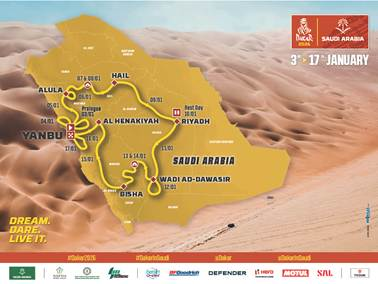

Finaliza 2025 y 2026 inicia con el primer evento deportivo del año, la carrera más dura del mundo motor. El Dakar 2026 se celebrará del 3 al 17 de enero en Arabia Saudí, con una ruta en bucle de unos 7,281 km, de los cuales 4,162 km se disputarán en especial.
812 competidores y 433 vehículos registrados hasta noviembre estarán en ruta el 3 de enero partiendo en el prólogo en Yanbu, dando inicio a esta nueva aventura.

🇲🇽 Representación Mexicana
Este año México tendrá solamente un representante como copiloto: Nicolas Ambriz, integrante del equipo MOTO BENNY RACING en la categoría Classic. Junto con el piloto David Bensadoun buscarán llegar al podio en su Toyota HDJ100.
Nicolas Ambriz y Luis Ramírez son los únicos mexicanos que han podido finalizar esta dura carrera en auto; junto con el canadiense Mathew Campbell en 2014 lograron llegar a la meta en Valparaíso, Chile.